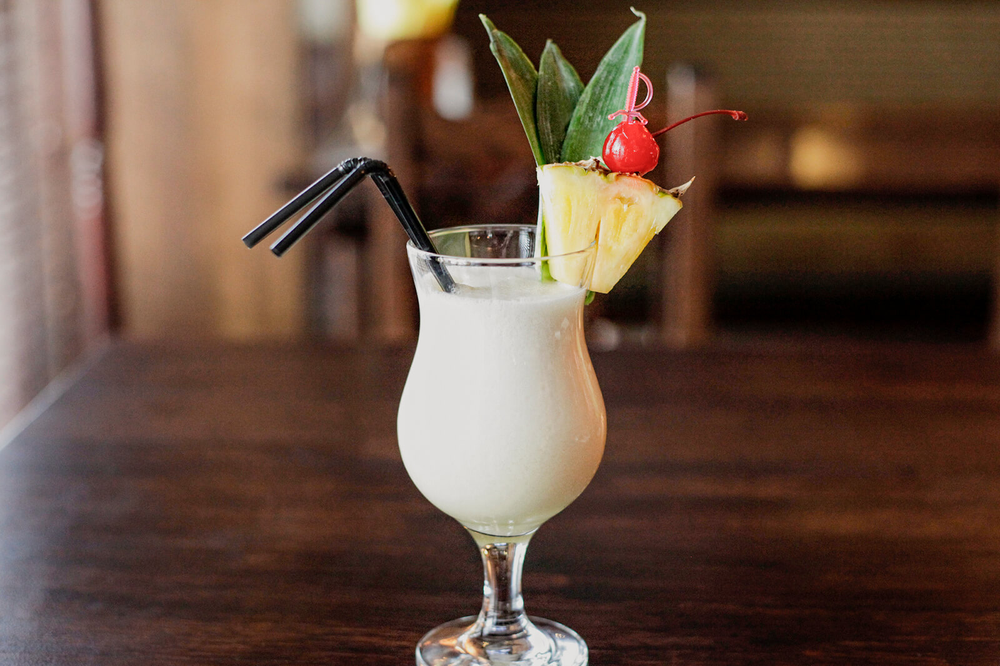

Piña Colada

Description
The original piña colada recipe is easy enough that even novices
can make it perfectly right on their first go around.
Just blend crushed pineapple, coconut cream,
and light rum together to create the deliciously old-fashioned flavor of a classic
piña colada.
Ingredients
- 3 teaspoons crushed pineapple
- 13 teaspoons coconut cream
- 3 ounces light rum
- Ice
- Pineapple wedge for garnish
- Cherry for garnish
Steps
- In a blender, combine the crushed pineapple, coconut cream, light rum, and ice.
- Blend until the mixture is smooth and then pour it into a poco grande glass.
- Garnish with a skewered pineapple wedge and cherry and serve.